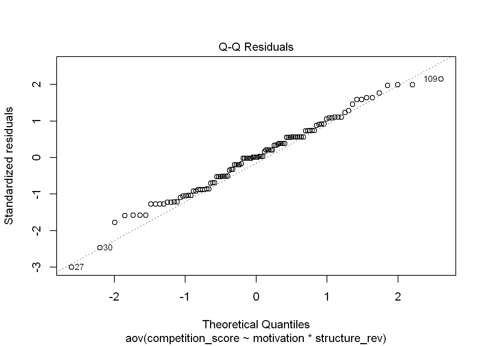
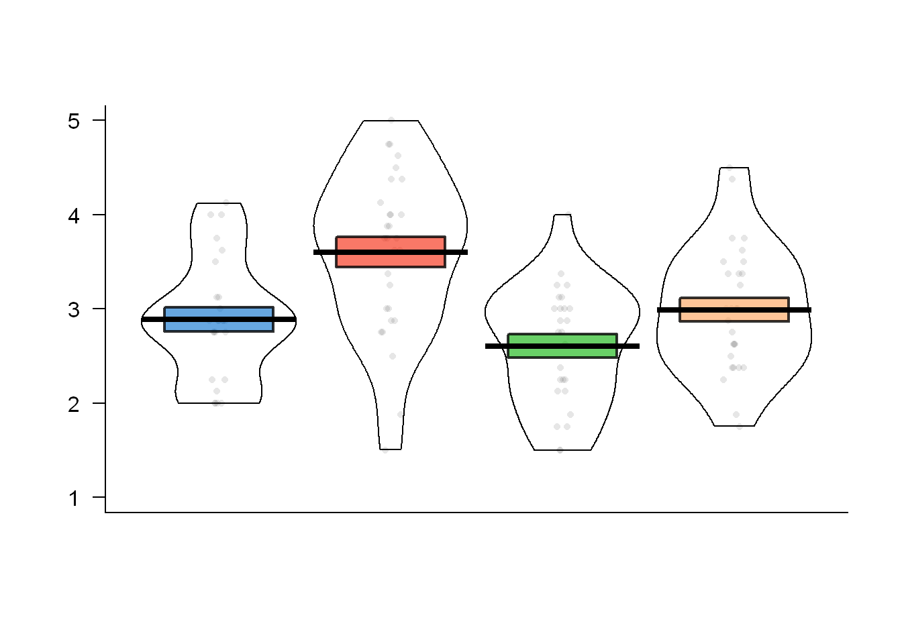
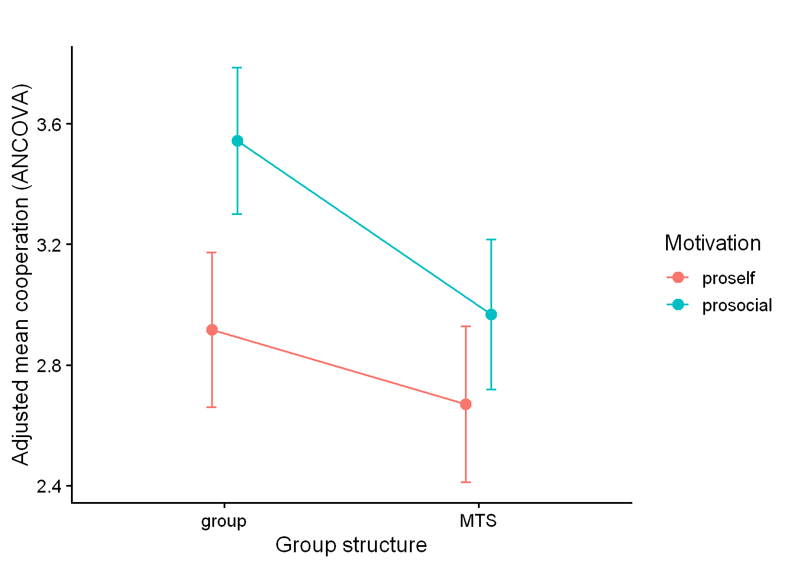
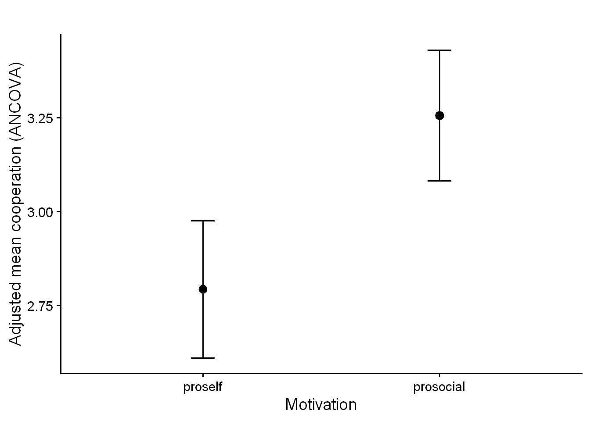
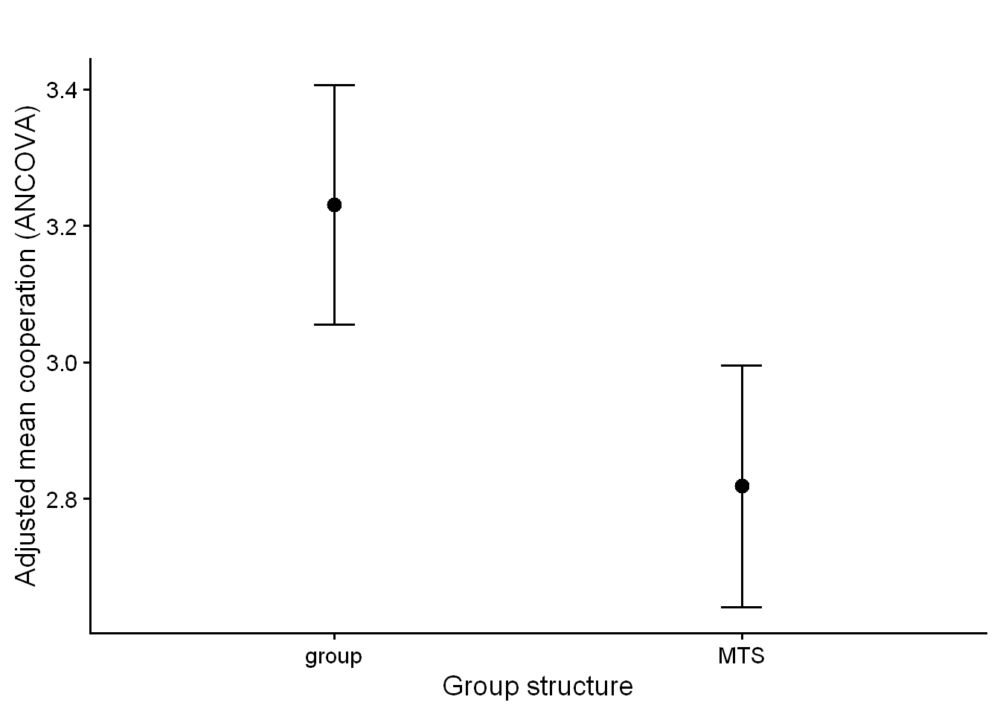

plot(anova_manipulation_check, which =2) # QQ plot

# This opens a Q-Q plot (quantile-quantile plot), which compares your residuals to a normal distribution.# # How to interpret:# # ✔️ Good fit: If the points fall roughly along the straight diagonal line, your residuals are approximately normal.# # ❌ Bad fit: If points curve away from the line (especially at the ends), your residuals deviate from normality.shapiro.test(residuals(anova_manipulation_check)) # Shapiro-Wilk test
Shapiro-Wilk normality test
data: residuals(anova_manipulation_check)
W = 0.98856, p-value = 0.4863
# How to interpret:# # Null hypothesis: Residuals are normally distributed.# # ✔️ If p > 0.05: You fail to reject the null → normality is not violated.# # ❌ If p < 0.05: You reject the null → indicates non-normality.# # Note: The Shapiro test is sensitive to large sample sizes. In large samples, slight non-normality may still yield a small p-value — look at the QQ plot too.
leveneTest(competition_score ~ motivation * structure_rev, data = filtered_data)
Levene's Test for Homogeneity of Variance (center = median)
Df F value Pr(>F)
group 3 0.918 0.4349
105
# How to interpret:# # Null hypothesis: Variances are equal across all groups.# # ✔️ If p > 0.05: You fail to reject the null → meaning that we have equal variances → assumption met.# ❌ If p < 0.05: You reject the null → meaning that we have unequal variances → assumption violated.## If violated, you might:# # Use robust ANOVA methods (e.g., Welch’s ANOVA)# # Use transformation or bootstrapping# # Proceed with caution if your group sizes are roughly equal (ANOVA is robust in that case)
📊 Fig: Manipulation Check
figure_manipulation_check_anova <-ggplot(filtered_data, aes(x = structure_rev, y = competition_score, fill = motivation)) +geom_boxplot(position =position_dodge(width =0.75), outlier.shape =NA) +geom_jitter(aes(color = motivation), position =position_jitterdodge(jitter.width =0.2, dodge.width =0.75), alpha =0.5, size =2, show.legend =FALSE) +stat_summary(fun = mean,geom ="point",aes(group = motivation),position =position_dodge(width =0.75),shape =21, # Filled circlesize =3,color ="black",fill ="white"# So it stands out on colored boxplots ) +scale_fill_brewer(palette ="Pastel1") +scale_color_brewer(palette ="Set1") +theme_classic() +theme(text =element_text(size =25, family ="serif"),axis.title =element_text(size =25, face ="bold", color ="black"),axis.text =element_text(size =25, face ="plain", color ="black"),axis.ticks =element_line(color ="black", linewidth =0.5),axis.ticks.length =unit(0.10, "cm"),axis.line =element_line(color ="black"),panel.grid.major =element_blank(),panel.grid.minor =element_blank(),panel.border =element_blank(),legend.title =element_text(size =25, color ="black"),legend.text =element_text(size =25, color ="black") ) +labs(title ="",x ="Group Structure",y ="Score",fill ="Motivation" )print(figure_manipulation_check_anova)
# # pirate plot based on how participants shared information broken out by condition. # pirateplot(competition_score ~ condition_rev,# data = filtered_data,# main = NULL, # xlab = "",# ylab = "",# pal = "xmen",# inf.method = "se",# avg.line.fun = mean,# theme = 2)pirateplot(competition_score ~ condition_rev,data = filtered_data,main =NULL, xlab ="",ylab ="",yaxt ="n",xaxt ="n",ylim =c(1, 5),gl.col =NA,bty ="n",pal ="xmen",inf.method ="se",avg.line.fun = mean,theme =2)axis(side =2, at =1:5, labels =1:5, las =1)box(bty ="l")

🗑️ t-test for motivation condition on competition
t.test(competition_score ~ motivation, data = filtered_data, var.equal =TRUE)
Two Sample t-test
data: competition_score by motivation
t = -3.8707, df = 107, p-value = 0.000187
alternative hypothesis: true difference in means between group proself and group prosocial is not equal to 0
95 percent confidence interval:
-0.8392953 -0.2707756
sample estimates:
mean in group proself mean in group prosocial
2.747596 3.302632
cohen.d(competition_score ~ motivation, data = filtered_data)
Call: cohen.d(x = competition_score ~ motivation, data = filtered_data)
Cohen d statistic of difference between two means
lower effect upper
competition_score 0.36 0.75 1.14
Multivariate (Mahalanobis) distance between groups
[1] 0.75
r equivalent of difference between two means
competition_score
0.35
ANCOVA
controls to include from linear regression test: SES (trend), narcissism (trend), machiavellianism
controls from the info sharing poisson GEE: age, sex, need for cognition, narcissism (trend)
all:
trends, excluding: socioeconomic status (trend) narcissism (trend)
significant: age, sex, need for cognition, Machiavellianism
🗑️ all included
# All included # Full ANCOVA modelancova_model <-aov( Manipulation_Mean ~ motivation * structure_rev + Q14.1+ sex + SES_mean + NeedCog_Mean + DirtyDozen_Narcissism + DirtyDozen_Machiavellianism,data = filtered_data)# Type I (sequential) sums of squaressummary(ancova_model)
# does the covariate differ systematically by group?# Fit modelancova_cov_test <-aov( DirtyDozen_Machiavellianism ~ motivation * structure_rev, data = filtered_data)# Get F-tests and p-valuessummary(ancova_cov_test)
This means Machiavellianism does not differ significantly across conditions, which supports the assumption of covariate independence.
test
# Only significant included, no trends# Machiavellianism age sex need for cognition# Full ANCOVA modelancova_model <-aov( Manipulation_Mean ~ motivation * structure_rev + Q14.1+ sex + NeedCog_Mean + DirtyDozen_Machiavellianism,data = filtered_data)# Type I (sequential) sums of squares# summary(ancova_model)# Type III sums of squares (common in ANCOVA reporting)library(car)Anova(ancova_model, type =3)
library(emmeans)emmeans(ancova_model, ~ motivation) # adjusted means by motivation
NOTE: Results may be misleading due to involvement in interactions
motivation emmean SE df lower.CL upper.CL
proself 2.84 0.0946 101 2.65 3.03
prosocial 3.30 0.0953 101 3.11 3.49
Results are averaged over the levels of: structure_rev, sex
Confidence level used: 0.95
emmeans(ancova_model, ~ structure_rev) # adjusted means by structure
NOTE: Results may be misleading due to involvement in interactions
structure_rev emmean SE df lower.CL upper.CL
group 3.28 0.0934 101 3.09 3.46
MTS 2.86 0.0946 101 2.68 3.05
Results are averaged over the levels of: motivation, sex
Confidence level used: 0.95
eta-squared
library(effectsize)
Warning: package 'effectsize' was built under R version 4.5.1
Attaching package: 'effectsize'
The following object is masked from 'package:psych':
phi
eta_squared(ancova_typeIII, partial =TRUE)
Type 3 ANOVAs only give sensible and informative results when covariates
are mean-centered and factors are coded with orthogonal contrasts (such
as those produced by `contr.sum`, `contr.poly`, or `contr.helmert`, but
*not* by the default `contr.treatment`).
Shapiro-Wilk normality test
data: resid_vals
W = 0.98524, p-value = 0.274
shapiro.test(residuals(ancova_model)) # Shapiro-Wilk test
Shapiro-Wilk normality test
data: residuals(ancova_model)
W = 0.98524, p-value = 0.274
# How to interpret:# # Null hypothesis: Residuals are normally distributed.# # ✔️ If p > 0.05: You fail to reject the null → normality is not violated.# # ❌ If p < 0.05: You reject the null → indicates non-normality.# # Note: The Shapiro test is sensitive to large sample sizes. In large samples, slight non-normality may still yield a small p-value — look at the QQ plot too.
library(car)leveneTest(Manipulation_Mean ~ motivation * structure_rev, data = filtered_data)
Levene's Test for Homogeneity of Variance (center = median)
Df F value Pr(>F)
group 3 0.918 0.4349
105
# How to interpret:# # Null hypothesis: Variances are equal across all groups.# # ✔️ If p > 0.05: You fail to reject the null → meaning that we have equal variances → assumption met.# ❌ If p < 0.05: You reject the null → meaning that we have unequal variances → assumption violated.## If violated, you might:# # Use robust ANOVA methods (e.g., Welch’s ANOVA)# # Use transformation or bootstrapping# # Proceed with caution if your group sizes are roughly equal (ANOVA is robust in that case)
🗑️ 📊 Fig: ANCOVA
library(emmeans)library(ggplot2)# Hold covariates at their sample means (recommended for clarity)at_vals <-with(filtered_data, list(Q14.1 =mean(Q14.1, na.rm =TRUE),sex =mean(sex, na.rm =TRUE), # if coded 0/1, this is the sample proportion female=1NeedCog_Mean =mean(NeedCog_Mean, na.rm =TRUE),DirtyDozen_Machiavellianism =mean(DirtyDozen_Machiavellianism, na.rm =TRUE)))emm_int <-emmeans( ancova_model,~ motivation * structure_rev,at = at_vals)emm_df <-as.data.frame(emm_int)p_emm <-ggplot(emm_df, aes(x = structure_rev, y = emmean,color = motivation, group = motivation)) +geom_point(position =position_dodge(width =0.2), size =3) +geom_line(position =position_dodge(width =0.2), linewidth =0.7) +geom_errorbar(aes(ymin = lower.CL, ymax = upper.CL),width =0.08, position =position_dodge(width =0.2)) +labs(x ="Group structure",y ="Adjusted mean cooperation (ANCOVA)",color ="Motivation",title ="") +theme_classic(base_size =14)print(p_emm)

# Adjusted means for motivation (averaged over structure; covariates set at means)emm_mot <-emmeans(ancova_model, ~ motivation, at = at_vals)
NOTE: Results may be misleading due to involvement in interactions
df_mot <-as.data.frame(emm_mot)p_mot <-ggplot(df_mot, aes(x = motivation, y = emmean)) +geom_point(size =3) +geom_errorbar(aes(ymin = lower.CL, ymax = upper.CL), width =0.1) +labs(x ="Motivation", y ="Adjusted mean cooperation (ANCOVA)", title ="") +theme_classic(base_size =14)# Adjusted means for structure (averaged over motivation; covariates set at means)emm_str <-emmeans(ancova_model, ~ structure_rev, at = at_vals)
NOTE: Results may be misleading due to involvement in interactions
df_str <-as.data.frame(emm_str)p_str <-ggplot(df_str, aes(x = structure_rev, y = emmean)) +geom_point(size =3) +geom_errorbar(aes(ymin = lower.CL, ymax = upper.CL), width =0.1) +labs(x ="Group structure", y ="Adjusted mean cooperation (ANCOVA)", title ="") +theme_classic(base_size =14)# Print either or both:print(p_mot)

print(p_str)

📊 Fig: ANCOVA
figure_manipulation_check_anova <-ggplot(filtered_data, aes(x = structure_rev, y = Manipulation_Mean, fill = motivation)) +geom_boxplot(position =position_dodge(width =0.75), outlier.shape =NA) +geom_jitter(aes(color = motivation), position =position_jitterdodge(jitter.width =0.2, dodge.width =0.75), alpha =0.5, size =2, show.legend =FALSE) +stat_summary(fun = mean,geom ="point",aes(group = motivation),position =position_dodge(width =0.75),shape =21, # Filled circlesize =3,color ="black",fill ="white"# So it stands out on colored boxplots ) +scale_fill_brewer(palette ="Pastel1") +scale_color_brewer(palette ="Set1") +scale_fill_brewer(palette ="Pastel1",labels =c("proself"="Proself", "prosocial"="Prosocial") ) +scale_color_brewer(palette ="Set1",labels =c("proself"="Proself", "prosocial"="Prosocial") ) +theme_classic() +theme(text =element_text(size =25, family ="serif"),axis.title =element_text(size =25, face ="bold", color ="black"),axis.text =element_text(size =25, face ="plain", color ="black"),axis.ticks =element_line(color ="black", linewidth =0.5),axis.ticks.length =unit(0.10, "cm"),axis.line =element_line(color ="black"),panel.grid.major =element_blank(),panel.grid.minor =element_blank(),panel.border =element_blank(),legend.title =element_text(size =25, color ="black"),legend.text =element_text(size =25, color ="black") ) +scale_x_discrete(labels =c("MTS"="Intergroup", "group"="Interindividual")) +labs(title ="",x ="Group Structure",y ="Cooperation",fill ="Motivation" )
Scale for fill is already present.
Adding another scale for fill, which will replace the existing scale.
Scale for colour is already present.
Adding another scale for colour, which will replace the existing scale.